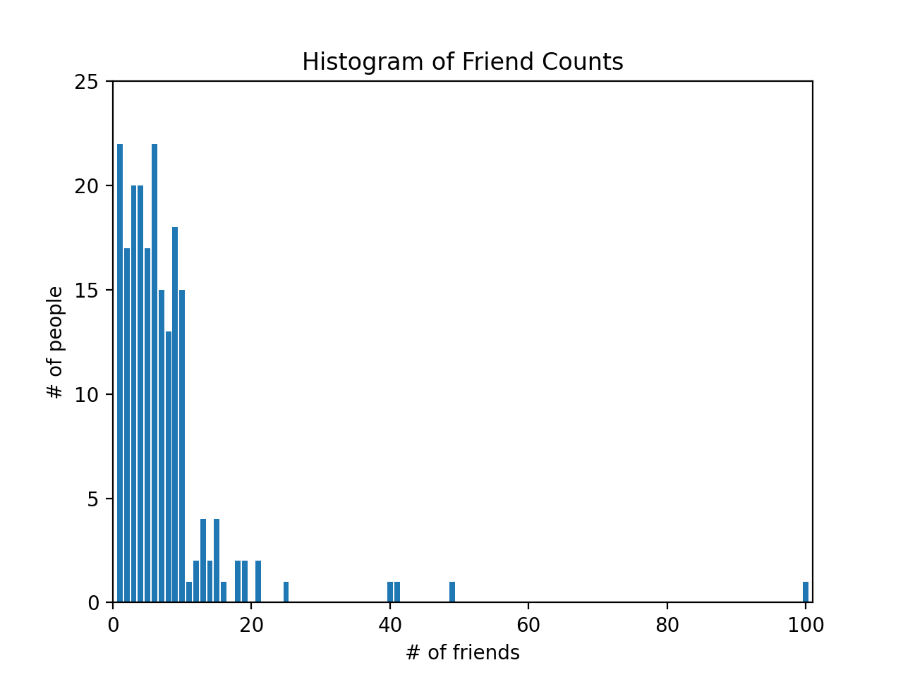
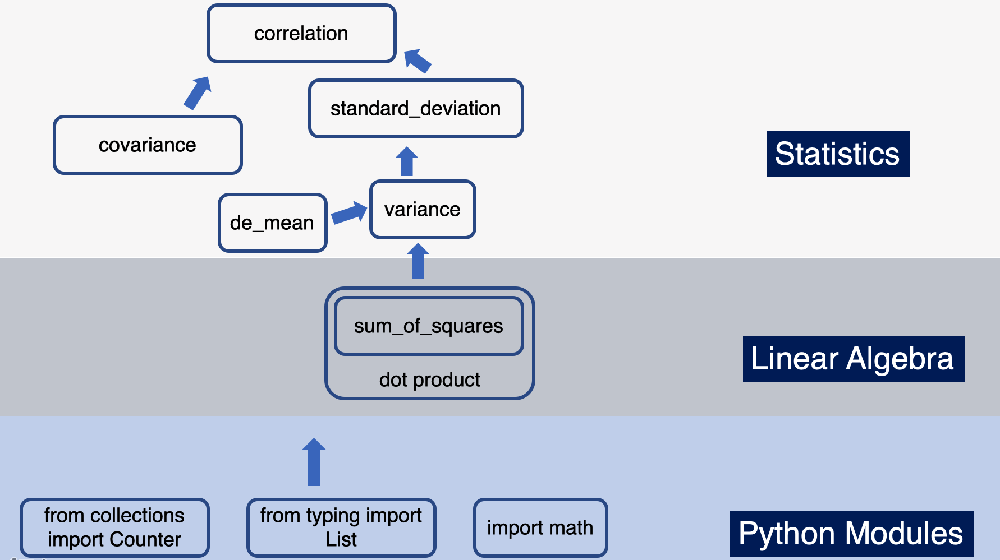

Data Science from Scratch (ch5) - Statistics
Descriptive Statistics & Correlations
Table of contents
Overview
This post is chapter 5 in continuation of my coverage of Data Science from Scratch by Joel Grus.
It should be noted upfront that everything covered in this post can be done more expediently and efficiently in libraries like NumPy as well as the statistics module in Python.
The primary value of this book, and by extension this post, in my opinion, is the emphasis on learning how Python primitives can be used to build tools from the ground up.
Specifically, we’ll examine how specific features of the Python language as well as functions we built in a previous post on linear algebra can be used to build tools used to describe data and relationships within data (aka statistics).
I think this is pretty cool. Hopefully you agree.
Example Data
This chapter continues the narrative of you as a newly hired data scientist at DataScienster, the social network for data scientists, and your job is to describe how many friends members in this social network has. We have two lists of float to work with. We’ll work with num_friends first, then daily_minutes later.
I wanted this post to be self-contained, and in order to do that we’ll have to read in a larger than average list of floats. The alternative would be to get the data directly from the book’s
github repo (statistics.py)
num_friends = [100.0,49,41,40,25,21,21,19,19,18,18,16,15,15,15,15,14,14,13,13,13,13,12,12,11,10,10,10,10,10,10,10,10,10,10,10,10,10,10,10,9,9,9,9,9,9,9,9,9,9,9,9,9,9,9,9,9,9,8,8,8,8,8,8,8,8,8,8,8,8,8,7,7,7,7,7,7,7,7,7,7,7,7,7,7,7,6,6,6,6,6,6,6,6,6,6,6,6,6,6,6,6,6,6,6,6,6,6,5,5,5,5,5,5,5,5,5,5,5,5,5,5,5,5,5,4,4,4,4,4,4,4,4,4,4,4,4,4,4,4,4,4,4,4,4,3,3,3,3,3,3,3,3,3,3,3,3,3,3,3,3,3,3,3,3,2,2,2,2,2,2,2,2,2,2,2,2,2,2,2,2,2,1,1,1,1,1,1,1,1,1,1,1,1,1,1,1,1,1,1,1,1,1,1]
daily_minutes = [1,68.77,51.25,52.08,38.36,44.54,57.13,51.4,41.42,31.22,34.76,54.01,38.79,47.59,49.1,27.66,41.03,36.73,48.65,28.12,46.62,35.57,32.98,35,26.07,23.77,39.73,40.57,31.65,31.21,36.32,20.45,21.93,26.02,27.34,23.49,46.94,30.5,33.8,24.23,21.4,27.94,32.24,40.57,25.07,19.42,22.39,18.42,46.96,23.72,26.41,26.97,36.76,40.32,35.02,29.47,30.2,31,38.11,38.18,36.31,21.03,30.86,36.07,28.66,29.08,37.28,15.28,24.17,22.31,30.17,25.53,19.85,35.37,44.6,17.23,13.47,26.33,35.02,32.09,24.81,19.33,28.77,24.26,31.98,25.73,24.86,16.28,34.51,15.23,39.72,40.8,26.06,35.76,34.76,16.13,44.04,18.03,19.65,32.62,35.59,39.43,14.18,35.24,40.13,41.82,35.45,36.07,43.67,24.61,20.9,21.9,18.79,27.61,27.21,26.61,29.77,20.59,27.53,13.82,33.2,25,33.1,36.65,18.63,14.87,22.2,36.81,25.53,24.62,26.25,18.21,28.08,19.42,29.79,32.8,35.99,28.32,27.79,35.88,29.06,36.28,14.1,36.63,37.49,26.9,18.58,38.48,24.48,18.95,33.55,14.24,29.04,32.51,25.63,22.22,19,32.73,15.16,13.9,27.2,32.01,29.27,33,13.74,20.42,27.32,18.23,35.35,28.48,9.08,24.62,20.12,35.26,19.92,31.02,16.49,12.16,30.7,31.22,34.65,13.13,27.51,33.2,31.57,14.1,33.42,17.44,10.12,24.42,9.82,23.39,30.93,15.03,21.67,31.09,33.29,22.61,26.89,23.48,8.38,27.81,32.35,23.84]
daily_hours = [dm / 60 for dm in daily_minutes]
Describing
The num_friends list is a list of numbers representing “number of friends” a person has, so for example, one person has 100 friends. The first thing we do to describe the data is to create a bar chart plotting the number of people who have 100 friends, 49 friends, 41 friends, and so on.
We’ll import Counter from collections and import matplotlib.pyplot.
We’ll use Counter to turn num_friends list into a defaultdict(int)-like object mapping keys to counts. For more info, please refer to this
previous post on the Counters.
Once we use the Counter collection, a
high-performance container datatype, we can use methods like most_common to find the keys with the most common values. Here we see that the five most common number of friends are 6, 1, 4, 3 and 9, respectively.
from collections import Counter
import matplotlib.pyplot as plt
friend_counts = Counter(num_friends)
# the five most common values are: 6, 1, 4, 3 and 9 friends
# [(6, 22), (1, 22), (4, 20), (3, 20), (9, 18)]
friend_counts.most_common(5)
To proceed with plotting, we’ll use friend_counts to create a list comprehension that will loop through friends_count and for all keys from 0-101 (xs) and print a corresponding value (if it exists). This becomes the y-axis to num_friends, which is the x-axis:
xs = range(101) # x-axis: largest num_friend value is 100
ys = [friend_counts[x] for x in xs] # y-axis
plt.bar(xs, ys)
plt.axis([0, 101, 0, 25])
plt.title("Histogram of Friend Counts")
plt.xlabel("# of friends")
plt.ylabel("# of people")
plt.show()
Here is the plot below. You can see one person with 100 friends.

You can also read more about data visualization here.
Alternatively, we could generate simple statistics to describe the data using built-in Python methods: len, min, max and sorted.
num_points = len(num_friends) # number of data points in num_friends: 204
largest_value = max(num_friends) # largest value in num_friends: 100
smallest_value = min(num_friends) # smallest value in num_friends: 1
sorted_values = sorted(num_friends) # sort the values in ascending order
second_largest_value = sorted_values[-2] # second largest value from the back: 49
Central Tendencies
The most common way of describing a set of data is to find it’s mean, which is the sum of all the values, divided by the number of values. note : we’ll continue to use type annotations. In my opinion, it helps you be a more deliberate and mindful Python programmer.
from typing import List
def mean(xs: List[float]) -> float:
return sum(xs) / len(xs)
assert 7.3333 < mean(num_friends) < 7.3334
However, the mean is notoriously sensitive to outliers so statisticians often supplement with other measures of central tendencies like median. Because the median is the middle-most value, it matters whether there is an even or odd number of data points.
Here, we’ll create two private functions for both situations - even and odd number of data points - in calculating the median. First, we’ll sort the data values. Then, for even number values, we’ll find the two middle values and split them. For odd number of values, we’ll divide the length of the dataset by 2 (i.e., 50).
Our median function will return either of the private function _median_even or _median_odd conditionally depending on if the length of a list of numbers is divisible (%2==0) by 2.
def _median_even(xs: List[float]) -> float:
"""If len(xs) is even, it's the average of the middle two elements"""
sorted_xs = sorted(xs)
hi_midpoint = len(xs) // 2 # e.g. length 4 => hi_midpoint 2
return (sorted_xs[hi_midpoint - 1] + sorted_xs[hi_midpoint]) / 2
def _median_odd(xs: List[float]) -> float:
"""If len(xs) is odd, its the middle element"""
return sorted(xs)[len(xs) // 2]
def median(v: List[float]) -> float:
"""Finds the 'middle-most' value of v"""
return _median_even(v) if len(v) % 2 == 0 else _median_odd(v)
assert median([1,10,2,9,5]) == 5
assert median([1, 9, 2, 10]) == (2 + 9) / 2
Because the median is the middle-most value, it does not fully depend on every value in the data. For illustration, hypothetically if we have a another list num_friends2 where one person had 10,000 friends, the mean would be much more sensitive to that change than the median would be.
num_friends2 = [10000.0,49,41,40,25,21,21,19,19,18,18,16,15,15,15,15,14,14
,13,13,13,13,12,12,11,10,10,10,10,10,10,10,10,10,10,10,10,10,10,10,9,9,9,9
,9,9,9,9,9,9,9,9,9,9,9,9,9,9,8,8,8,8,8,8,8,8,8,8,8,8,8,7,7,7,7,7,7,7,7,7,7
,7,7,7,7,7,6,6,6,6,6,6,6,6,6,6,6,6,6,6,6,6,6,6,6,6,6,6,5,5,5,5,5,5,5,5,5,5
,5,5,5,5,5,5,5,4,4,4,4,4,4,4,4,4,4,4,4,4,4,4,4,4,4,4,4,3,3,3,3,3,3,3,3,3,3
,3,3,3,3,3,3,3,3,3,3,2,2,2,2,2,2,2,2,2,2,2,2,2,2,2,2,2,1,1,1,1,1,1,1,1,1,1
,1,1,1,1,1,1,1,1,1,1,1,1]
mean(num_friends2) # more sensitive to outliers: 7.333 => 55.86274509803921
median(num_friends2) # less sensitive to outliers: 6.0 => 6.0
You may also used quantiles to describe your data. Whenever you’ve heard “X percentile”, that is a description of quantiles relative to 100. In fact, the median is the 50th percentile (where 50% of the data lies below this point and 50% lies above).
Because quantile is a position from 0-100, the second argument is a float from 0.0 to 1.0. We’ll use that float to multiply with the length of the list. Then we’ll wrap in int to create an integer index which we’ll use on a sorted xs to find the quantile.
def quantile(xs: List[float], p: float) -> float:
"""Returns the pth-percentile value in x"""
p_index = int(p * len(xs))
return sorted(xs)[p_index]
assert quantile(num_friends, 0.10) == 1
assert quantile(num_friends, 0.25) == 3
assert quantile(num_friends, 0.75) == 9
assert quantile(num_friends, 0.90) == 13
Finally, we have the mode, which looks at the most common values. First, we use the Counter method on our list parameter and since Counter is a subclass of dict we have access to methods like values() to find all the values and items() to find key value pairs.
We define max_count to find the max value (22), then the function returns a list comprehension which loops through counts.items() to find the key associated with the max_count (22). That is 1 and 6, meaning twenty-two people (the mode) had one or six friends.
def mode(x: List[float]) -> List[float]:
"""Returns a list, since there might be more than one mode"""
counts = Counter(x)
max_count = max(counts.values())
return [x_i for x_i, count in counts.items() if count == max_count]
assert set(mode(num_friends)) == {1, 6}
Because we had already used Counter on num_friends previously (see friend_counts), we could have just called the most_common(2) method to get the same results:
mode(num_friends) # [6, 1]
friend_counts.most_common(2) # [(6, 22), (1, 22)]
Dispersion
Aside from our data’s central tendencies, we’ll also want to understand it’s spread or dispersion. The tools to do this are data_range, variance, standard deviation and interquartile range.
Range is a straightforward max value minus min value.
Variance measures how far a set of numbers is from their average value. What’s more interesting, for our purpose, is how we need to borrow the functions we had previously built in the linear algebra post to create the variance function.
If you look at its wikipedia page, variance is the squared deviation of a variable from its mean.
First, we’ll need to create the de_mean function that takes a list of numbers and subtract from all numbers in the list, the mean value (this gives us the deviation from the mean).
Then, we’ll sum_of_squares all those deviations, which means we’ll take all the values, multiply them with itself (square it), then add the values (and divide by length of the list minus one) to get the variance.
Recall that the sum_of_squares is a special case of the dot product function.
# variance
from typing import List
Vector = List[float]
# see vectors.py in chapter 4 for dot and sum_of_squares
def dot(v: Vector, w: Vector) -> float:
"""Computes v_1 * w_1 + ... + v_n * w_n"""
assert len(v) == len(w), "vectors must be the same length"
return sum(v_i * w_i for v_i, w_i in zip(v,w))
def sum_of_squares(v: Vector) -> float:
"""Returns v_1 * v_1 + ... + v_n * v_n"""
return dot(v,v)
def de_mean(xs: List[float]) -> List[float]:
"""Translate xs by subtracting its mean (so the result has mean 0)"""
x_bar = mean(xs)
return [x - x_bar for x in xs]
def variance(xs: List[float]) -> float:
"""Almost the average squared deviation from the mean"""
assert len(xs) >= 2, "variance requires at least two elements"
n = len(xs)
deviations = de_mean(xs)
return sum_of_squares(deviations) / (n - 1)
assert 81.54 < variance(num_friends) < 81.55
The variance is sum_of_squares deviations, which can be tricky to interpret. For example, we have a num_friends with values ranging from 0 to 100.
What does a variance of 81.54 mean?
A more common alternative is the standard deviation. Here we take the square root of the variance using Python’s math module.
With a standard deviation of 9.03, and we know the mean of num_friends is 7.3, anything below 7 + 9 = 16 or 7 - 9 (0 friends) friends is still within a standard deviation of the mean. And we can check by running friend_counts that most people are within a standard deviation of the mean.
On the other hand, we know that someone with 20 friends is more than one standard deviation away from the mean.
import math
def standard_deviation(xs: List[float]) -> float:
"""The standard deviation is the square root of the variance"""
return math.sqrt(variance(xs))
assert 9.02 < standard_deviation(num_friends) < 9.04
However, because the standard deviation builds on the variance, which is dependent on the mean, we know that just like the mean, it can be sensitive to outliers, we can use an alternative called the interquartile range, which is based on the median and less sensitive to outliers.
Specifically, the interquartile range can be used to examine num_friends between the 25th and 75th percentile. A large chunk of people are going to have around 6 friends.
def interquartile_range(xs: List[float]) -> float:
"""Returns the difference between the 75%-ile and the 25%-ile"""
return quantile(xs, 0.75) - quantile(xs, 0.25)
assert interquartile_range(num_friends) == 6
Now that we describe a single list of data, we’ll also want to look at potential relationship between two data sources. For example, we may have a hypothesis that the amount of time spent on the DataScienster social network is somehow related to the number of friends someone has.
We’ll examine covariance and correlations next.
Correlation
If variance is how much a single set of numbers deviates from its mean (i.e., see de_mean above), then covariance measures how two sets of numbers vary from their means. With the idea that if they co-vary the same amount, then they could be related.
Here we’ll borrow the dot production function we developed in the
linear algebra post.
Moreover, we’ll examine if there’s a relationship between num_friends and daily_minutes and daily_hours (see above).
def covariance(xs: List[float], ys: List[float]) -> float:
assert len(xs) == len(ys), "xs and ys must have same number of elements"
return dot(de_mean(xs), de_mean(ys)) / (len(xs) - 1)
assert 22.42 < covariance(num_friends, daily_minutes) < 22.43
assert 22.42 / 60 < covariance(num_friends, daily_hours) < 22.43 / 60
As with variance, a similar critique can be made of covariance, you have to do extra steps to interpret it. For example, the covariance of num_friends and daily_minutes is 22.43.
What does that mean? Is that considered a strong relationship?
A more intuitive measure would be a correlation:
def correlation(xs: List[float], ys: List[float]) -> float:
"""Measures how much xs and ys vary in tandem about their means"""
stdev_x = standard_deviation(xs)
stdev_y = standard_deviation(ys)
if stdev_x > 0 and stdev_y > 0:
return covariance(xs,ys) / stdev_x / stdev_y
else:
return 0 # if no variation, correlation is zero
assert 0.24 < correlation(num_friends, daily_minutes) < 0.25
assert 0.24 < correlation(num_friends, daily_hours) < 0.25
By dividing out the standard deviation of both input variables, correlation is always between -1 (perfect (anti) correlation) and 1 (perfect correlation). A correlation of 0.24 is relatively weak correlation (although what is considered weak, moderate, strong depends on the context of the data).
One thing to keep in mind is simpson’s paradox or when the relationship between two variables change when accounting for a third, confounding variable. Moreover, we should keep this cliché in mind (it’s a cliché for a reason): correlation does not imply causation.
Summary
We are just five chapters in and we can begin to see how we’re building the tools now, that we’ll use later on. Here’s a visual summary of what we’ve covered in this post and how it connects to previous posts, namely linear algebra and the python crash course.

For more content on data science, machine learning, R, Python, SQL and more, find me on Twitter.
paulapivat
web3 | Bankless DAO
My interests include data science, machine learning and R/Python programming.